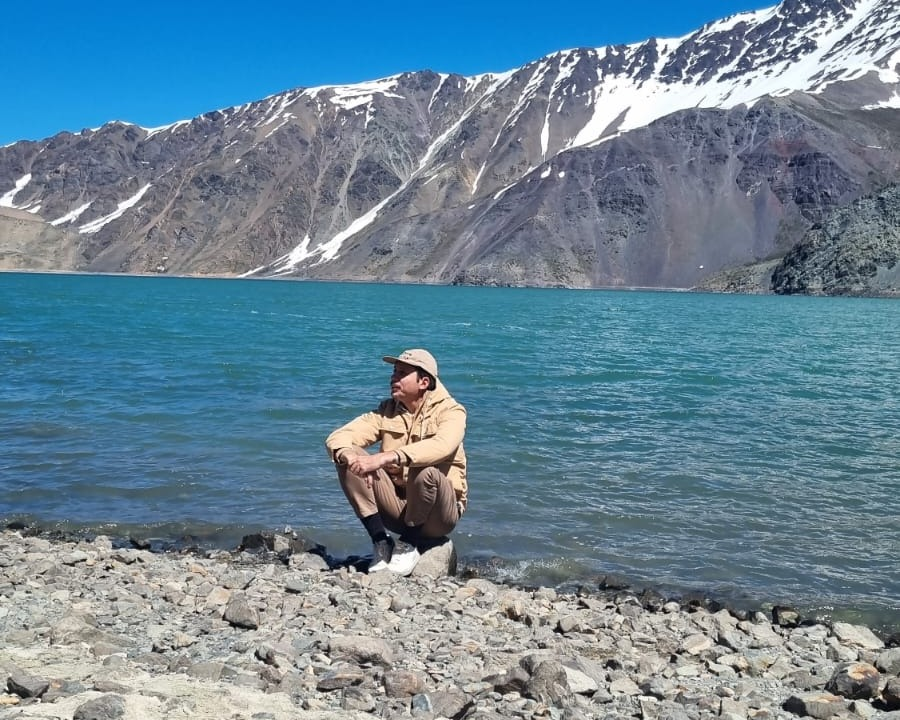
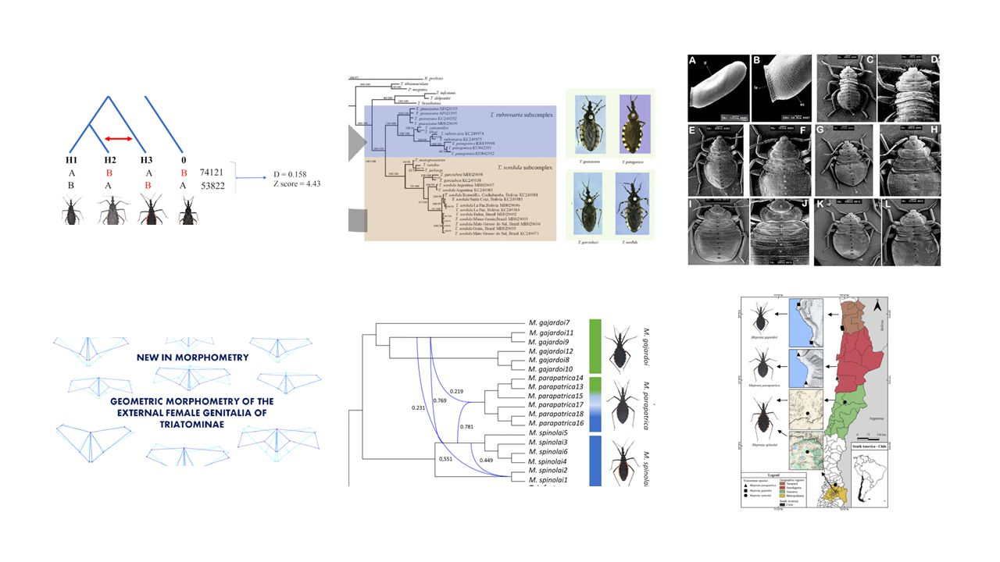
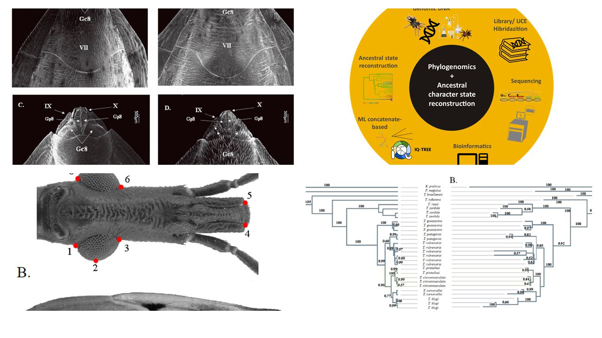

Tiago Belintani
Researcher | Postdoctoral Fellow | Evolutionary Scientist – Brazil
Hello, I'm Tiago Belintani, a postdoctoral researcher at UNESP.
I study evolution, phylogenomics, and systematics of Triatominae (vectors of Chagas disease) and Theraphosidae (tarantulas).
My background is in Animal Biology, with strong emphasis on bioinformatics, evolutionary biology, and morphometric analysis.
🧬 Work
- Researcher in Evolutionary Biology
- Bioinformatician for Transcriptomic and Phylogenomic Projects
🎓 Education
- Universidade Estadual de Campinas – IB/Unicamp
- Faculdade de Ciências Farmacêuticas – FCFAR/Unesp
- University of Idaho – UIDAHO
- São Paulo State University (Unesp) – Campus de Rio Claro

